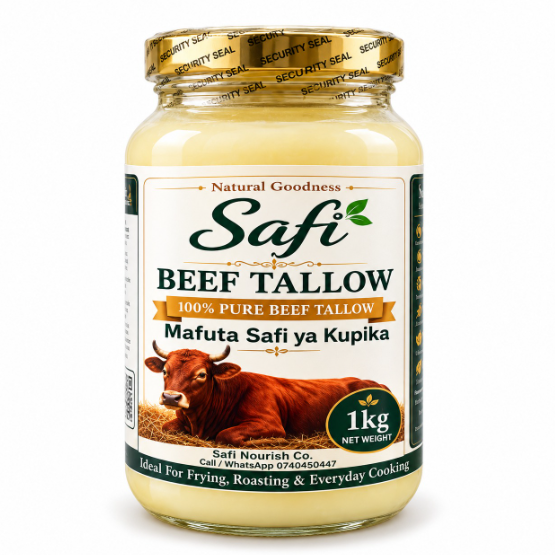
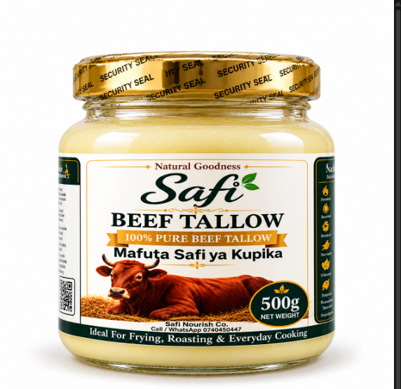
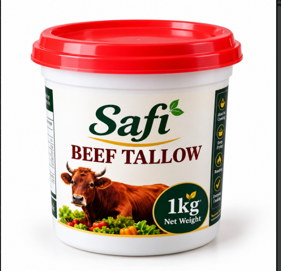
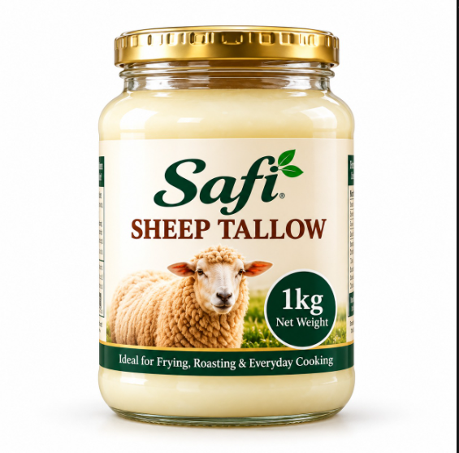
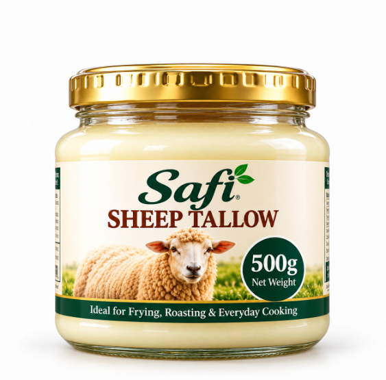
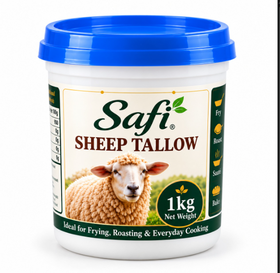
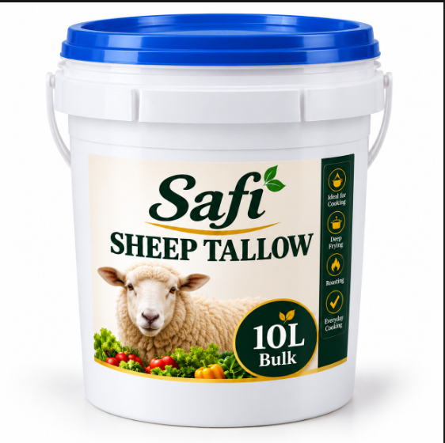
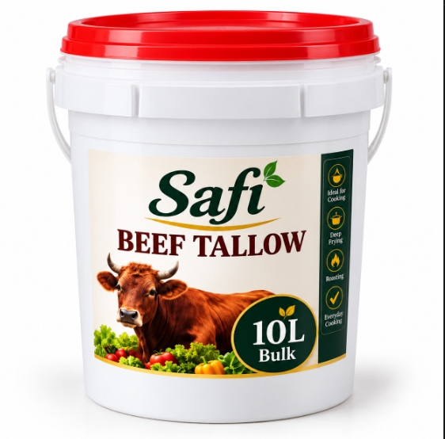
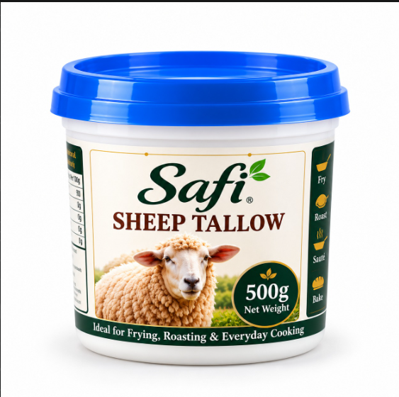
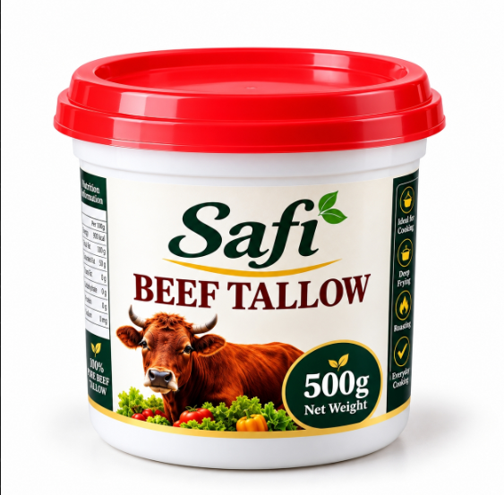

Beef Tallow — 1kg Glass Jar
KES 850.00
Premium beef tallow packaged in a reusable glass jar.
Shop Online ↗Shop online
Browse beef and sheep tallow in glass jars, plastic tubs and bulk buckets. Each displayed package has a price and its own Shop Online button.

KES 850.00
Premium beef tallow packaged in a reusable glass jar.
Shop Online ↗
KES 500.00
Premium beef tallow in a compact reusable glass jar.
Shop Online ↗
KES 750.00
Carefully rendered beef tallow for everyday cooking.
Shop Online ↗
KES 1,150.00
Premium sheep tallow packaged in a reusable glass jar.
Shop Online ↗
KES 600.00
Sheep tallow in a convenient reusable glass jar.
Shop Online ↗
KES 950.00
Carefully rendered sheep tallow suitable for frying, roasting and traditional cooking.
Shop Online ↗
KES 9,000.00
Bulk sheep tallow for restaurants, caterers, food businesses and high-volume users.
Shop Online ↗
KES 7,000.00
Bulk beef tallow for restaurants, caterers, food businesses and high-volume users.
Shop Online ↗
KES 500.00
A practical smaller sheep tallow pack for regular home cooking.
Shop Online ↗
KES 400.00
A convenient smaller pack for customers who want to try beef tallow or use it occasionally.
Shop Online ↗KES 850.00
Premium beef tallow packaged in a reusable glass jar.
Shop Online ↗KES 1,150.00
Premium sheep tallow packaged in a reusable glass jar.
Shop Online ↗KES 750.00
Carefully rendered beef tallow for everyday cooking.
Shop Online ↗KES 950.00
Carefully rendered sheep tallow suitable for frying, roasting and traditional cooking.
Shop Online ↗KES 500.00
Premium beef tallow in a compact reusable glass jar.
Shop Online ↗KES 600.00
Sheep tallow in a convenient reusable glass jar.
Shop Online ↗KES 400.00
A convenient smaller pack for customers who want to try beef tallow or use it occasionally.
Shop Online ↗KES 500.00
A practical smaller sheep tallow pack for regular home cooking.
Shop Online ↗